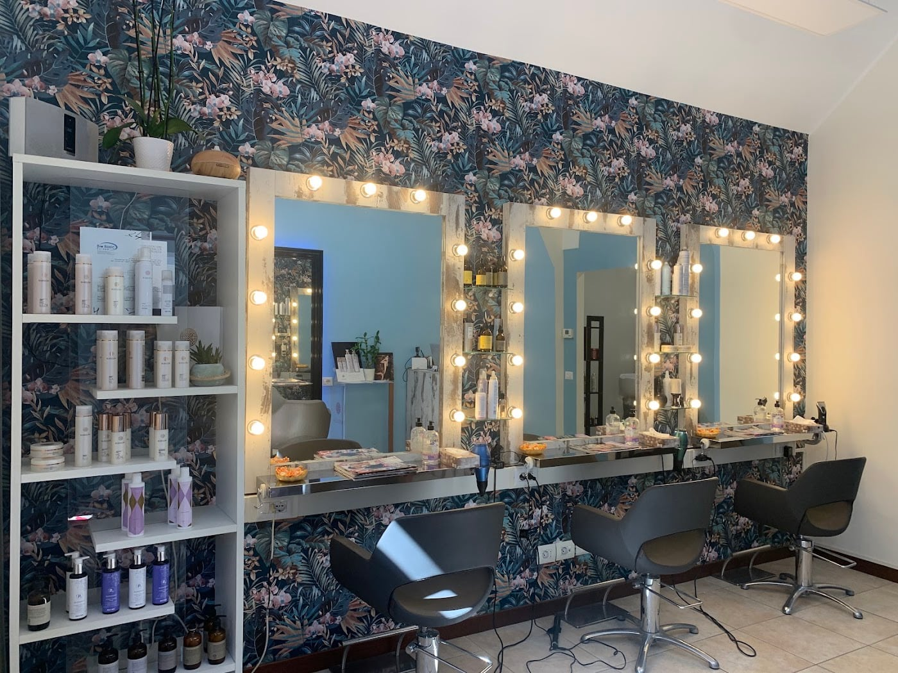
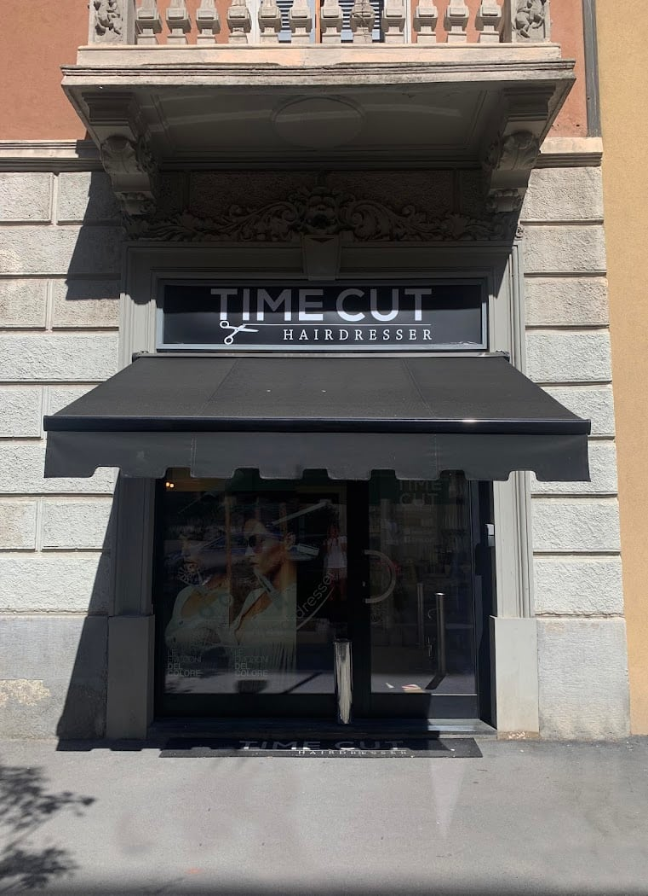

Taglio & piega
Tagli su misura, per donna e uomo, con la piega giusta e i consigli per rifarla a casa.
Parrucchiere · NoLo, Milano
Prenditi il tuo tempo.
Un piccolo salone di quartiere a NoLo dove il taglio comincia dall'ascolto. Federico, Michele e il loro tempo — perché il risultato giusto non ha fretta. Accogliente, rilassato, su misura.

NoLo · Milano
01Il salone
Time Cut è un salone di quartiere in Via Rovereto, nel cuore di NoLo: pochi posti, carta da parati botanica, specchi caldi a lampadine e un'atmosfera rilassata. Un posto dove non ci si sente mai di corsa.
Federico e Michele hanno un pregio che i clienti raccontano sempre: sanno ascoltare e capire esattamente quello che cerchi — dal taglio classico al mosso più ribelle — per un risultato che ti somiglia davvero.
02Servizi
Tagli su misura, per donna e uomo, con la piega giusta e i consigli per rifarla a casa.
Colore, riflessi, colpi di sole e schiariture per un risultato naturale e luminoso.
Trattamenti ristrutturanti e prodotti mirati per capelli sani, morbidi e curati.
Gestione e valorizzazione del riccio e del mosso ribelle, con tagli pensati apposta.
Ogni servizio parte da una chiacchierata: raccontaci cosa cerchi e troviamo la strada insieme.
03Galleria
04Dove & orari
| Lunedì | Chiuso |
|---|---|
| Martedì | 14:00 – 18:00 |
| Mercoledì | 10:00 – 18:30 |
| Giovedì | 10:00 – 18:30 |
| Venerdì | 09:00 – 18:30 |
| Sabato | 09:00 – 18:00 |
| Domenica | Chiuso |
Via Rovereto 6, 20127 Milano · 351 774 4726
La mappa è di Google: aprendola, Google riceve il tuo indirizzo IP e può usare i suoi cookie.
05Recensioni
“Federico e Michele sono fantastici: accoglienti, disponibili e super professionali. Sanno ascoltare e capire esattamente quello che chiede la cliente. Consigliatissimi!”
Costanza · Google
“Ambiente accogliente e rilassante. Federico ha capito subito come farmi ottenere il risultato desiderato, senza rovinare il capello. Esperto, paziente e disponibile.”
La Lau · Local Guide
“Cortesia, simpatia e bravura: il mix perfetto per un taglio perfetto.”
Google
“Da provare assolutamente: attenti alle esigenze del cliente e super simpatici!”
Google
06Prenota
Il modo più veloce per prenotare è WhatsApp: dicci cosa cerchi e ti troviamo il primo momento libero. Oppure chiamaci — ti aspettiamo in Via Rovereto.
Siamo un parrucchiere di quartiere: taglio e piega, colore e schiariture, trattamenti di cura per i capelli e consulenza sullo stile. Per donna e uomo.
Il modo più veloce è scriverci su WhatsApp o chiamare il 351 774 4726. Ti troviamo il primo momento libero, senza fretta.
In Via Rovereto 6, a NoLo. Aperti martedì 14–18, mercoledì e giovedì 10–18:30, venerdì 9–18:30, sabato 9–18. Lunedì e domenica chiuso.
Sì: dai tagli su misura alla gestione del mosso e del riccio, l'obiettivo è farti uscire con un risultato che ti somiglia.